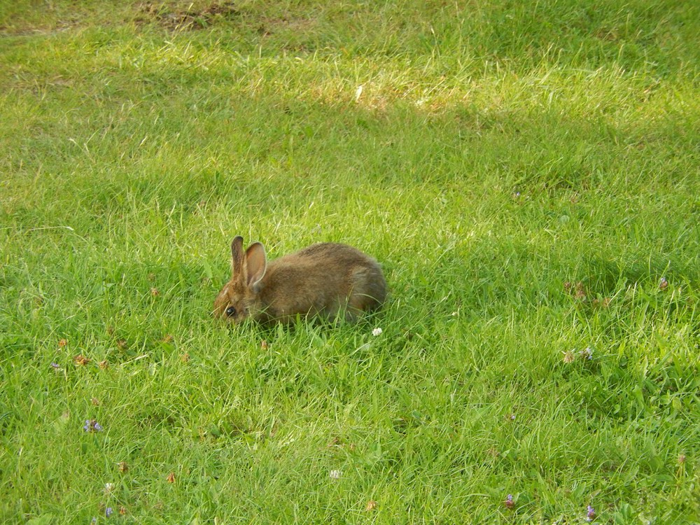
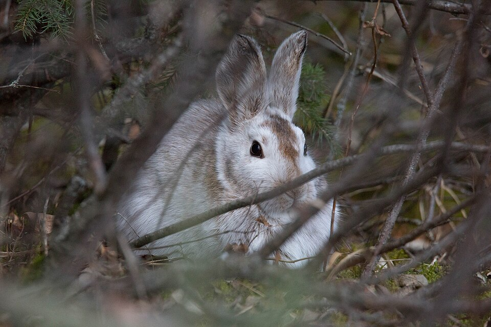

Snowshoe Hare
Lepus americanus


- Also called
- Varying hare
- Kind
- mammal · Leporidae
- Native to Vermont
- yes
- Legal status
- Not stated on the pages read (hunted; the Landowner's Guide says it is targeted by recreational hunters) (checked 2026-10-30)
- Look-alikes
- Eastern cottontail rabbit
Names
Snowshoe hare, also called the varying hare for its seasonal coat. Often mistaken for a rabbit, but it is a hare.
Range and habitat
Found throughout Vermont, in greater numbers in mountains than in valleys or farmland. Best habitat is in and around young softwood stands (aspen, spruce and cedar swamps are prime) where it is hard for a predator to see through the stand: understory stem densities giving 60 to 85 percent cover are best in winter. All of a hare's needs can be met within a home range of about 20 acres (core area 5 to 10 acres).
How to identify (by season; look-alikes and the key difference)
- Versus a rabbit: the back feet are much larger; it turns white in winter; the young are born above ground, furred, with open eyes (rabbit young are born blind and naked in underground dens).
- Daytime shelter: a "form" under exposed tree roots, ledges, clumps of small trees or logs, used repeatedly. It is most active at dawn, dusk and through the night.
Through the year
Dates are typical for Vermont and shift with elevation and year; "approximate" means the source gave a season and the dates are a translation of it.
| When | What | Look for | What to do | Dates |
|---|---|---|---|---|
| Mar 1 to Jul 31 | breeding (watch) | Breeding runs about March through July; gestation is 37 days. | - | stated |
| May 1 to Aug 31 | young (watch) | Young are born from May through August, one to six (up to nine on the species page) per litter, one to three or four litters a year. They are born above ground, fully furred and with their eyes open, unlike rabbits. | - | stated |
| Dec 1 to Mar 31 | molt (watch) | The coat is white in winter (it is brown the rest of the year), an adaptation to snow; the big hind feet that give it its name help it move in deep snow. Months of the color change are not stated. | - | approximate |
Signs on the land (tracks, scat, browse, nests, holes, calls)
- Winter browse: twigs, buds and tender bark of shrubs and small evergreen trees, and berry-bush stems.
- Forms (daytime beds) under roots, ledges, small trees and logs.
- Tracks are not described in the sources read.
Role in the forest (what it eats, what eats it, what it needs)
Prey for coyote, fisher, bobcat, lynx, great horned owl and marten. In summer it eats clover, grasses, ferns, berries and succulent woody parts; in winter, twigs, buds, bark and stems and seedlings of alder, aspen, spruce, hemlock, balsam fir, birches, willows, white pine and cedar. In northern boreal forests populations cycle every 9 to 11 years; in Vermont any cycle appears less pronounced. At peak numbers good habitat can hold more than one hare per acre.
What helps it thrive (light, soil, shelter, food and the trees it uses)
- Dense young softwood. The Guide says optimal hare habitat is in and around young softwood stands, which give concealment and thermal cover; the harder a predator finds it to see through a stand, the better. An understory with cover of 60 to 85 percent in winter is optimal, and all a hare's needs should be met within about a 20-acre home range.
- A recipe for 20 acres: 20 to 50 percent of the stand in 'base cover' of dense conifers 8 to 16 feet tall; 30 to 50 percent in 'travel cover' (in spruce and fir, stands 30 years and older and over 16 feet tall); and 5 to 10 percent in permanent grass and forb openings of about a quarter acre, for summer food. Small openings next to softwood cover reduce travel to food.
- Food: clover, grasses, ferns, berries and succulent woody growth in summer; in winter twigs, buds and bark of shrubs and small evergreen trees and seedlings of alder, aspen, spruce, hemlock, balsam fir, birch, willow, white pine and cedar (Balsam Fir).
- Balance with other species: the Guide says to balance hare management with the needs of species that need older forest, and to keep large unfragmented forests and coarse woody debris, which hares share with marten, some songbirds and deer.
Managing for it (habitat practices) and living with it (conflicts and damage)
Softwood cover is the single most important habitat need.
- Landowner's Guide, per 20-acre home range: 20 to 50 percent of the stand in base cover of dense conifers 8 to 16 feet tall; 30 to 50 percent in travel cover (in spruce-fir, averaging 30 years and older and over 16 feet until harvest); 5 to 10 percent in permanent herbaceous openings of about 0.25 acre scattered around.
- Species page, per 20 acres: base cover 30 percent (about 6 acres, trees 10 to 30 years old, 8 to 16 feet), travel cover 45 percent (9 acres), permanent herbaceous vegetation 10 percent (2 acres, ideally four half-acre openings) and regeneration 15 percent (3 acres, up to 8 feet).
- Recently managed forest (thinning, cutting, burning) helps by natural regeneration; keep partial shade on cuts to encourage softwood regeneration; make several small openings rather than one or two large ones; seeding log landings or forest roads may be enough herbaceous cover.
- Balance hare management with species that need older forest (marten, some songbirds, wintering deer); manage at the landscape level.
Legal status
Not stated on the pages read.
Sources
- Vermont Fish & Wildlife Department, snowshoe hare: https://vtfishandwildlife.com/learn-more/vermont-critters/mammals/snowshoe-hare (read 2026-10-30)
- Vermont Fish & Wildlife Department, A Landowner's Guide (complete PDF): chapter 22, Snowshoe Hare (read 2026-10-30): https://vtfishandwildlife.com/sites/fishandwildlife/files/documents/Learn%20More/LandownersGuide/Landowner-Guide-Complete.pdf
- Vermont Fish & Wildlife Department, A Landowner's Guide, Wildlife Habitat Management for Lands in Vermont, chapter 22 (Snowshoe Hare): https://vtfishandwildlife.com/sites/fishandwildlife/files/documents/Learn%20More/LandownersGuide/Landowner-Guide-Complete.pdf (read as text 2026-11-01)
What this page is based on
Kind of source: primary-agency (Vermont Fish & Wildlife species page and the department's Landowner's Guide, read as text)
What was read: The Vermont Fish & Wildlife snowshoe hare page (summarizing fetch, 2026-10-30; no tracks, no molt months, no population figures, no legal status, no last-updated date) and the snowshoe hare chapter of the department's A Landowner's Guide (PDF read as text). The two sources give different cover percentages and litter sizes; both are recorded. The winter-coat window translates 'in winter'. Habitat needs added 2026-11-01 from chapter 22 of the Vermont Fish and Wildlife Landowner's Guide (read as text).
Last checked: 2026-10-30
Vermont Woodland Owner's Reference, built 2026-11-09. Rules and dates here are summaries, not legal advice; dates shift with elevation and year. Photo and recording credits · The text is by Loop Works, CC BY 4.0 (pictures and recordings keep their own licenses) · Note: _reference/US-VT/Species/Snowshoe Hare.md